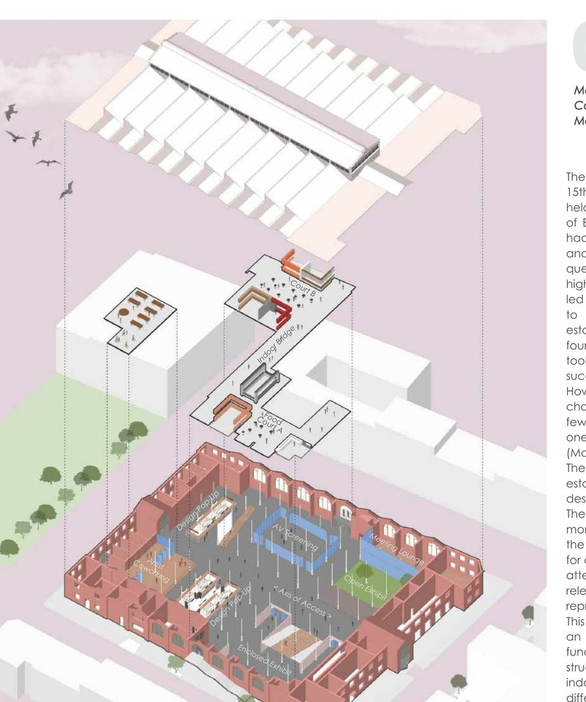

AcademicArthalle X — Makers' Market
Contemporizing Arminius Markthalle, a historic Berlin market hall, by reprogramming it into a Makers' Market for local art and design — inserting a bridge structure and enclosed exhibit hall within the preserved 1891 building.